Poisson GLM for modeling count data
WILD6900
2019-04-01
poisson_glm.RmdIn this activity, we will analyze a small data set containing counts of both population size and reproductive success using Poisson and Binomial GLMs.
Objectives
Analyze count data using Poisson and Binomial GLMs
Gain experience diagnosing JAGS output to check convergence
-
Rfunctions used in this exercise:
Data
The data for this activity comes from a long-term project that monitored a population of peregrine falcons nesting in the [French Jura](https://en.wikipedia.org/wiki/Jura_(department) from 1964 to 2003 1.

To access the data, update to the latest version of the WILD6900 package:
devtools::install_github("RushingLab/WILD6900")Once the updated package is installed, the data can be loaded:
| Year | Pairs | R.Pairs | Eyasses |
|---|---|---|---|
| 1964 | 34 | 19 | 27 |
| 1965 | 45 | 18 | 30 |
| 1966 | 39 | 22 | 36 |
| 1967 | 36 | 19 | 37 |
| 1968 | 20 | 8 | 19 |
| 1969 | 18 | 7 | 10 |
To see what each column represents, type:
?falconsAnalysis 1: Change in population size
The first model we will fit examines change in the number of adult falcon pairs over time. Plotting the data shows that this change has not been linear:
ggplot(falcons, aes(x = Year, y = Pairs)) + geom_point() + stat_smooth(se = FALSE)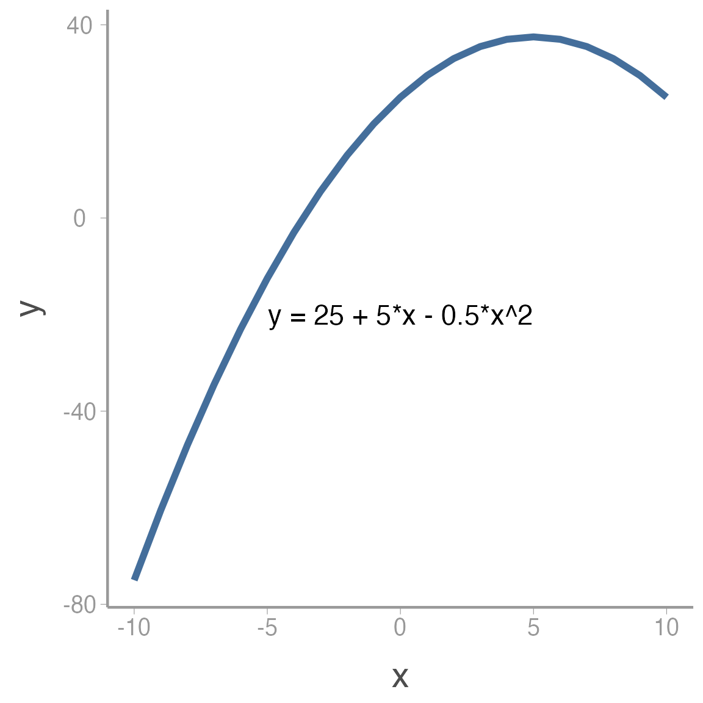
After a short decline at the beginning of the study period, the population then increased dramatically before perhaps reaching its carrying capacity.
Modeling non-linear effects using linear models
How can we model the non-linear change in abundance if, by definition, linear models model linear effects? Using polynomials!
Remember the equation for a curved line with a single peak (or bottom):
\[\Large y = a + b \times x + c \times x^2\]
Where \(a\) is the maximum (or minimum) value of \(y\), \(b\) is the value of \(x\) where this maximum (or minimum) occurs and \(c\) determines whether the peak is a maximum (\(c<0\)) or a minimum (\(c>0\)).
We can add more complex shape by adding additional polynomial terms. For example, including a cubic term creates an s-shaped curve:
\[\Large y = a + b \times x + c \times x^2 + d \times x^3\]
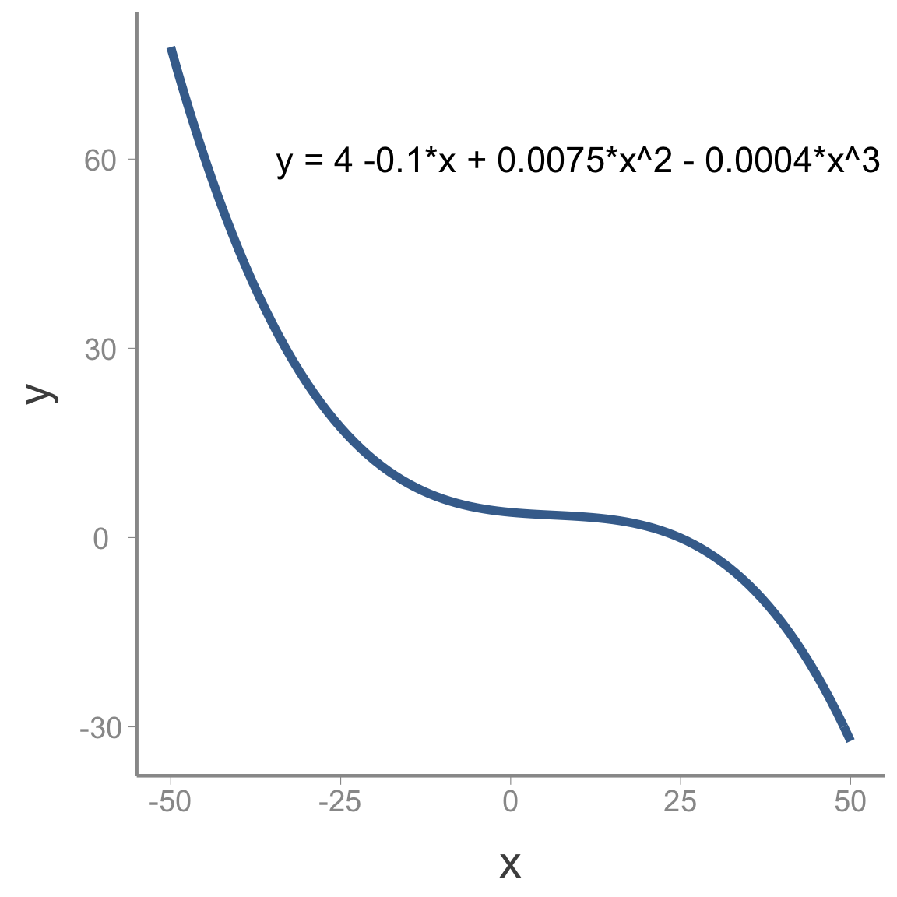
Including polynomial terms in the linear predictor on the model gives us enormous flexibility to model non-linear relationships using GLMs.
Modeling change in falcon counts
To build a model for the falcon data, we need to define the components required in all GLMs (the distribution, link function, and linear predictor). Because these are counts, a natural choice for the distribution is:
\[C_t \sim Poisson(\lambda_t)\] where \(C_t\) is the observed count in year \(t\) and \(\lambda_t\) is the expected count.
As we learned in lecture, the conventional link function for count data is the log-link:
\[log(\lambda_t) = log(E(\lambda_t))\]
Finally, we need to write the linear predictor. Based on the preliminary visualization of the data, a cubic polynomial might be appropriate to capture the non-linear change over time:
\[log(\lambda_t) = \alpha + beta_1 \times year_t + \beta_2 \times year^2_t + \beta_3 \times year^3_t\]
Accessing and viewing the JAGS model
A JAGS model file that corresponds to the above model is already included in the WILD6900 package. You can access that file and view the model using the following code:
mod.file <- system.file("jags/GLM_Poisson.jags", package = "WILD6900")
file.show(mod.file)model {
# Priors
alpha ~ dnorm(0, 0.33)
beta1 ~ dnorm(0, 0.33)
beta2 ~ dnorm(0, 0.33)
beta3 ~ dnorm(0, 0.33)
# Likelihooda
for (i in 1:n){
C[i] ~ dpois(lambda[i])
log(lambda[i]) <- alpha + beta1 * year[i] + beta2 * pow(year[i],2) + beta3 * pow(year[i],3)
} #i
}From this file, you can see that we will use relatively non-informative normal priors on each of the regression coefficients.
You can also see that the likelihood statement is very similar to the linear regression model from the last lecture, with a few minor differences. First, because we assume the observed falcon counts come from a Poisson distribution, we use dpois(lambda[i]) rather than dnorm(mu[i], tau). Also, we have to apply the log-link function to the predicted counts (log(lambda[i])=...). Notice that JAGS allows you to model the transformed predicted counts on the left hand side of the linear predictor equation
Questions
Plot a histogram of random samples from the normal prior used in the model (remember to convert the precision of
0.33to standard deviation). As you can see, this is not as vague as the normal priors we have used in the past. What is the advantage of using less-vague normal priors?In the linear regression model we fit in the last lecture, we also had a prior for \(\tau\), the (inverse) of the process variance. Why do we not include that parameter in this model?
Creating the
lambda[i]object is not strictly necessary since it is a deterministic function of year. If you wanted to have fewer lines of code, you could include the linear predictor directly inside of thedpois()function instead oflambda[i], though you would need to appropriately transform the linear predictor. What transformation would you use to put the linear predictor on the count scale?
Fitting the model
Before fitting the model, we need to prepare the input for JAGS. This includes:
storing the data as a named list
creating a function to randomly generate the initial values for each parameter
creating a vector with the parameters we want JAGS to monitor
set the MCMC settings
We’ve mentioned several times, it’s often a bad idea to include covariate values that are too far from 0. For this reason, we will first scale year to \(mean=0\) and \(sd=1\):
year <- (falcons$Year - mean(falcons$Year))/sd(falcons$Year)
jags_data <- list(C = falcons$Pairs, year = year, n = nrow(falcons))
jags_inits <- function(){list(alpha = rnorm(1), beta1 = rnorm(1), beta2 = rnorm(1), beta3 = rnorm(1))}
params <- c("alpha", "beta1", "beta2", "beta3", "lambda")
nC <- 3
nI <- 10000
nB <- 2500
nT <- 1Now we’re ready to run the model:
falcon_mod <- jagsUI::jags(data = jags_data, inits = jags_inits,
parameters.to.save = params,
model.file = mod.file,
n.chains = nC, n.iter = nI,
n.burnin = nB, n.thin = nT)
#>
#> Processing function input.......
#>
#> Done.
#>
#> Compiling model graph
#> Resolving undeclared variables
#> Allocating nodes
#> Graph information:
#> Observed stochastic nodes: 40
#> Unobserved stochastic nodes: 4
#> Total graph size: 513
#>
#> Initializing model
#>
#> Adaptive phase.....
#> Adaptive phase complete
#>
#>
#> Burn-in phase, 2500 iterations x 3 chains
#>
#>
#> Sampling from joint posterior, 7500 iterations x 3 chains
#>
#>
#> Calculating statistics.......
#>
#> Done.View a portion of the results (printing all of the lambda values takes up too much room):
falcon_mod$summary[1:10,]| mean | sd | 2.5% | 25% | 50% | 75% | 97.5% | Rhat | n.eff | overlap0 | f | |
|---|---|---|---|---|---|---|---|---|---|---|---|
| alpha | 4.2310 | 0.0304 | 4.1707 | 4.2107 | 4.2313 | 4.2515 | 4.2903 | 1 | 5575 | 0 | 1.0000 |
| beta1 | 1.1176 | 0.0479 | 1.0238 | 1.0856 | 1.1173 | 1.1497 | 1.2110 | 1 | 4064 | 0 | 1.0000 |
| beta2 | 0.0062 | 0.0242 | -0.0413 | -0.0100 | 0.0063 | 0.0225 | 0.0535 | 1 | 8246 | 1 | 0.6032 |
| beta3 | -0.2335 | 0.0251 | -0.2827 | -0.2505 | -0.2337 | -0.2166 | -0.1841 | 1 | 4739 | 0 | 1.0000 |
| lambda[1] | 32.2226 | 3.1999 | 26.3537 | 30.0141 | 32.0902 | 34.2842 | 38.8660 | 1 | 12982 | 0 | 1.0000 |
| lambda[2] | 30.1704 | 2.5470 | 25.4360 | 28.4278 | 30.0924 | 31.8293 | 35.4184 | 1 | 17338 | 0 | 1.0000 |
| lambda[3] | 28.7249 | 2.0693 | 24.8587 | 27.3111 | 28.6674 | 30.0812 | 32.9210 | 1 | 22500 | 0 | 1.0000 |
| lambda[4] | 27.7826 | 1.7269 | 24.5253 | 26.6080 | 27.7436 | 28.9333 | 31.2563 | 1 | 22500 | 0 | 1.0000 |
| lambda[5] | 27.2715 | 1.4923 | 24.4510 | 26.2456 | 27.2419 | 28.2583 | 30.2682 | 1 | 22500 | 0 | 1.0000 |
| lambda[6] | 27.1431 | 1.3451 | 24.6015 | 26.2175 | 27.1207 | 28.0438 | 29.8346 | 1 | 17331 | 0 | 1.0000 |
Notice that all Rhat are less than 1.1, indicating that all parameters appear to have converged. Also note f for beta2 - the posterior mean is 0.006 but there is only a 60.3% probability that it is greater than 0.
As usual, let’s check the traceplots to see how they look:
# View traceplots for alpha, beta1, beta2, and beta3 (not for lambda)
jagsUI::traceplot(falcon_mod, parameters=params[-5]) 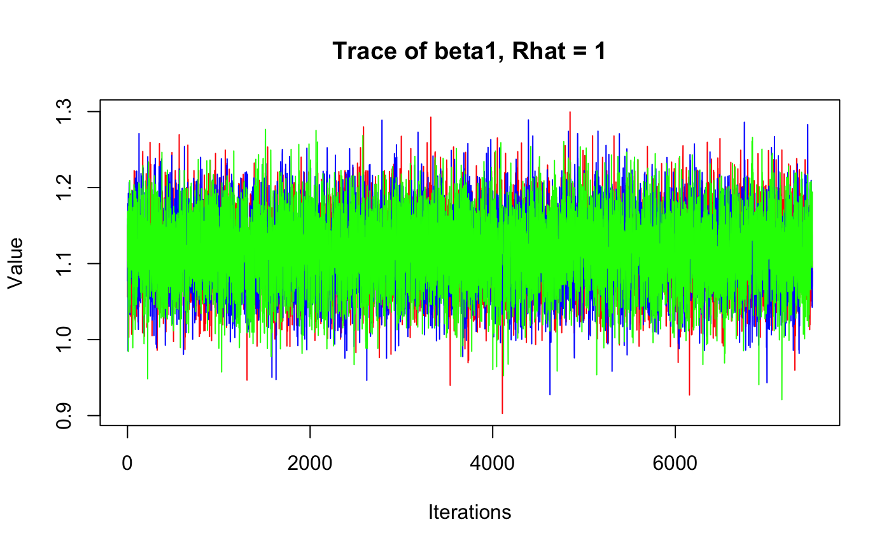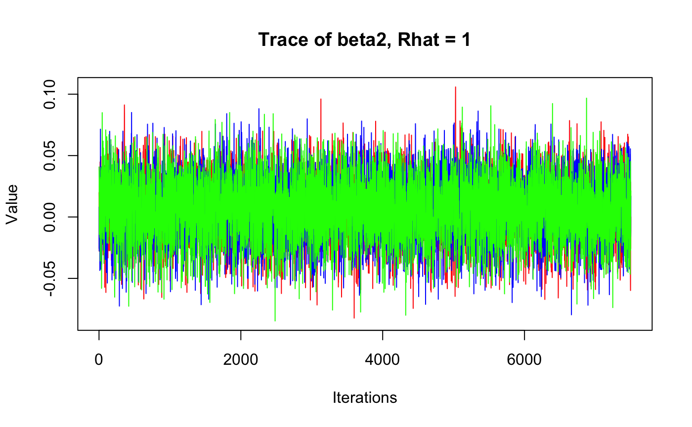
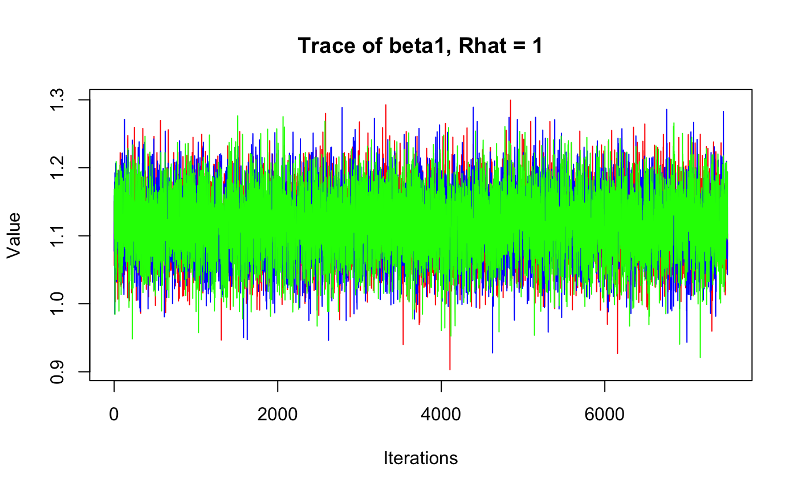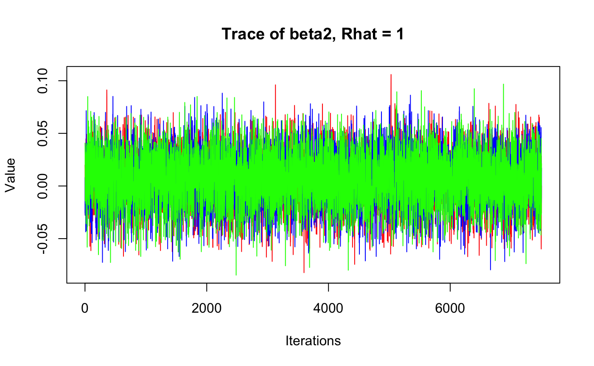
By monitoring lambda we can also plot the predicted counts along with the observed counts. First, we add the posterior means and upper/lower bounds of the 95% credible interval to the falcons data frame, then use ggplot to visualize:
falcons <- dplyr::mutate(falcons, lambda = falcon_mod$mean$lambda,
q2.5 = falcon_mod$q2.5$lambda,
q97.5 = falcon_mod$q97.5$lambda)
ggplot(falcons) +
geom_ribbon(aes(x = Year, ymin = q2.5, ymax = q97.5), fill = "grey90") +
geom_path(aes(x = Year, y = lambda), color = "red") +
geom_point(aes(x = Year, y = Pairs)) +
scale_y_continuous("Pairs")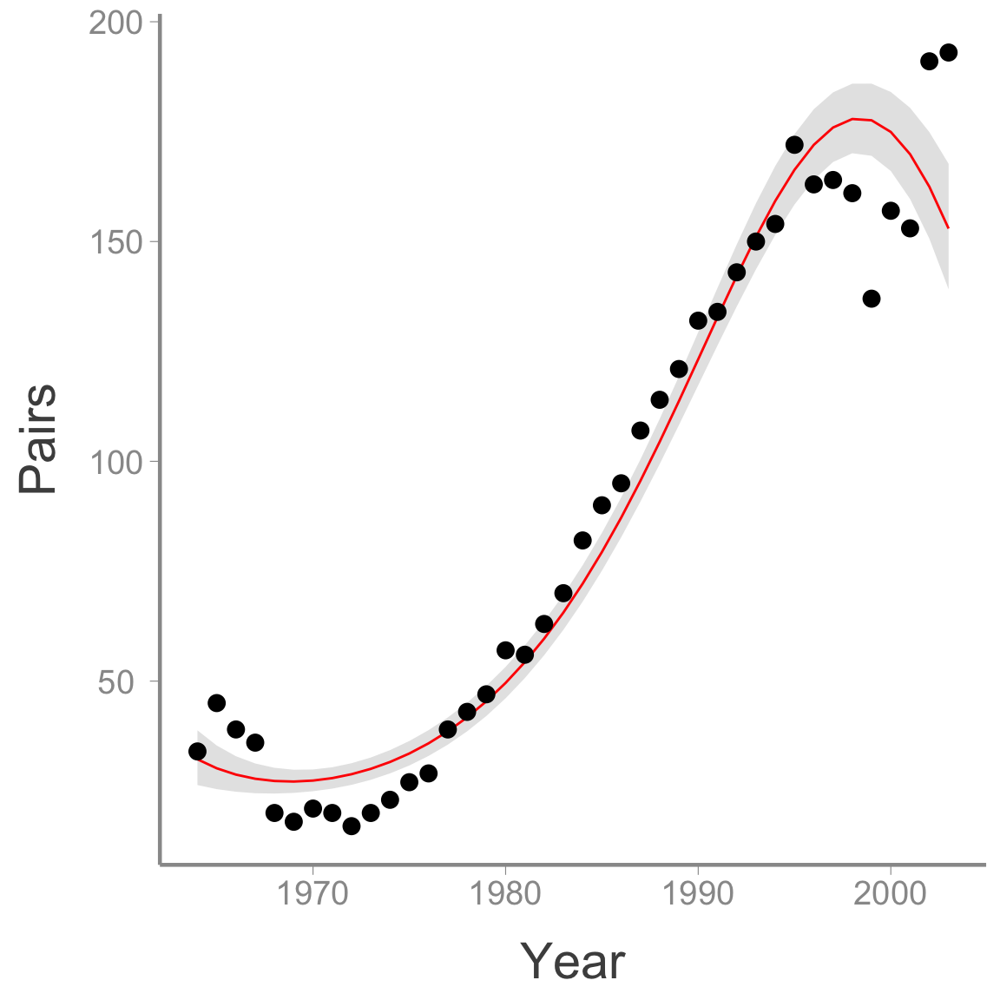
Analysis 2: Nest success model
Next, let’s use the falcons data set to fit another type of GLM - the binomial GLM. Hopefully this exercise will show you that once you’re comfortable writing out and coding the GLM components (distribution, link function, and linear predictor), it is extremely easy to fit models with different distributional assumptions.
To estimate reproductive success (i.e., the probability that a pair successfully produces offspring), we will model the number of reproductive pairs (falcons$R.Pairs) as a function of the total number of pairs (falcons$Pairs).
Because the total number of reproductive pairs cannot exceed the total number of pairs, the counts in falcons$.RPairs are bounded to be less than falcons$Pairs. In this case, the Poisson distribution is not an appropriate count model. Instead, we will use the binomial distribution:
\[C_t \sim binomial(N_t, p_t)\]
Our goal is to model \(p_t\), the probability of nesting successfully in each year. In this case, the log link is not appropriate - \(p_t\) is bound between 0 and 1. For probabilities, the logit link is generally the appropriate link function:
\[logit(p_t) = log\bigg(\frac{p_t}{1-p_t}\bigg)\]
Following Kéry & Schaub, we’ll model probability as a quadratic function of year:
\[logit(p_t) = \alpha + \beta_1 \times year_t + \beta_2 \times year^2_t\]
As in the last example, there is a JAGS model file available in the WILD6900 package:
mod.file <- system.file("jags/GLM_Binomial.jags", package = "WILD6900")However, before looking at it, see if you can write out the model in the BUGS language (use the same priors from the previous example and note that there is a built in logit() function).
As before, we prepare the data and run the model:
year <- (falcons$Year - mean(falcons$Year))/sd(falcons$Year)
jags_data <- list(C = falcons$R.Pairs, N = falcons$Pairs, year = year, nyears = nrow(falcons))
jags_inits <- function(){list(alpha = rnorm(1), beta1 = rnorm(1), beta2 = rnorm(1), beta3 = rnorm(1))}
params <- c("alpha", "beta1", "beta2", "p")
nC <- 3
nI <- 10000
nB <- 2500
nT <- 1
falcon_mod <- jagsUI::jags(data = jags_data, inits = jags_inits,
parameters.to.save = params,
model.file = mod.file,
n.chains = nC, n.iter = nI,
n.burnin = nB, n.thin = nT)
#>
#> Processing function input.......
#>
#> Done.
#>
#> Compiling model graph
#> Resolving undeclared variables
#> Allocating nodes
#> Graph information:
#> Observed stochastic nodes: 40
#> Unobserved stochastic nodes: 3
#> Total graph size: 390
#> Warning in jags.model(file = model.file, data = data, inits = inits,
#> n.chains = n.chains, : Unused initial value for "beta3" in chain 1
#> Warning in jags.model(file = model.file, data = data, inits = inits,
#> n.chains = n.chains, : Unused initial value for "beta3" in chain 2
#> Warning in jags.model(file = model.file, data = data, inits = inits,
#> n.chains = n.chains, : Unused initial value for "beta3" in chain 3
#> Initializing model
#>
#> Adaptive phase.....
#> Adaptive phase complete
#>
#>
#> Burn-in phase, 2500 iterations x 3 chains
#>
#>
#> Sampling from joint posterior, 7500 iterations x 3 chains
#>
#>
#> Calculating statistics.......
#>
#> Done.falcon_mod$summary[1:10,]| mean | sd | 2.5% | 25% | 50% | 75% | 97.5% | Rhat | n.eff | overlap0 | f | |
|---|---|---|---|---|---|---|---|---|---|---|---|
| alpha | 0.7819 | 0.0560 | 0.6712 | 0.7447 | 0.7821 | 0.8197 | 0.8895 | 1.001 | 3170 | 0 | 1.0000 |
| beta1 | 0.0606 | 0.0452 | -0.0272 | 0.0301 | 0.0604 | 0.0912 | 0.1495 | 1.002 | 818 | 1 | 0.9077 |
| beta2 | -0.3044 | 0.0419 | -0.3873 | -0.3326 | -0.3043 | -0.2760 | -0.2230 | 1.001 | 3397 | 0 | 1.0000 |
| p[1] | 0.4588 | 0.0369 | 0.3867 | 0.4337 | 0.4588 | 0.4839 | 0.5308 | 1.002 | 1145 | 0 | 1.0000 |
| p[2] | 0.4811 | 0.0342 | 0.4138 | 0.4577 | 0.4812 | 0.5043 | 0.5473 | 1.002 | 1127 | 0 | 1.0000 |
| p[3] | 0.5023 | 0.0315 | 0.4402 | 0.4808 | 0.5025 | 0.5238 | 0.5634 | 1.002 | 1113 | 0 | 1.0000 |
| p[4] | 0.5224 | 0.0289 | 0.4649 | 0.5027 | 0.5226 | 0.5422 | 0.5784 | 1.002 | 1103 | 0 | 1.0000 |
| p[5] | 0.5414 | 0.0265 | 0.4888 | 0.5234 | 0.5417 | 0.5596 | 0.5924 | 1.002 | 1098 | 0 | 1.0000 |
| p[6] | 0.5592 | 0.0242 | 0.5111 | 0.5429 | 0.5595 | 0.5757 | 0.6059 | 1.002 | 1102 | 0 | 1.0000 |
| p[7] | 0.5758 | 0.0221 | 0.5317 | 0.5608 | 0.5761 | 0.5908 | 0.6181 | 1.002 | 1116 | 0 | 1.0000 |
# View traceplots for alpha, beta1, and beta2(not for p)
jagsUI::traceplot(falcon_mod, parameters=params[-4]) 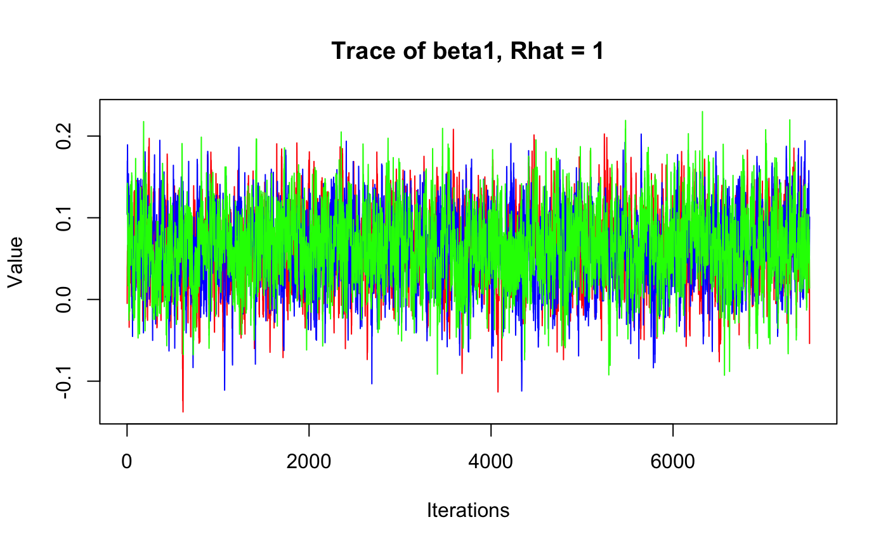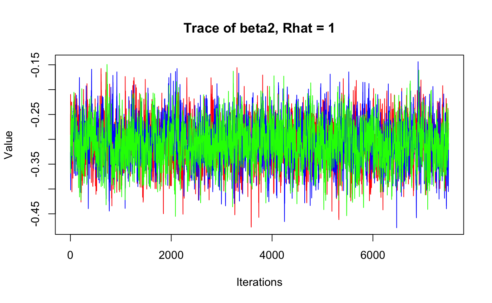
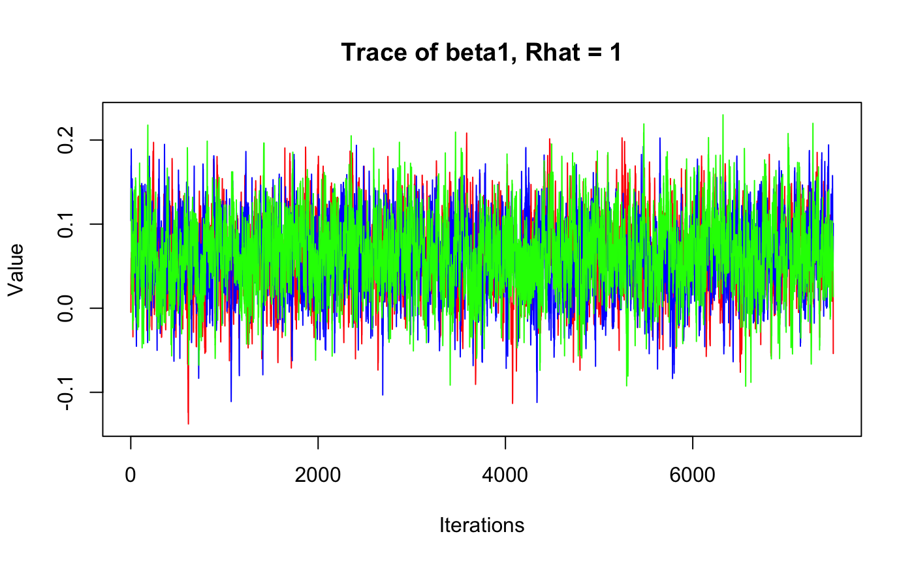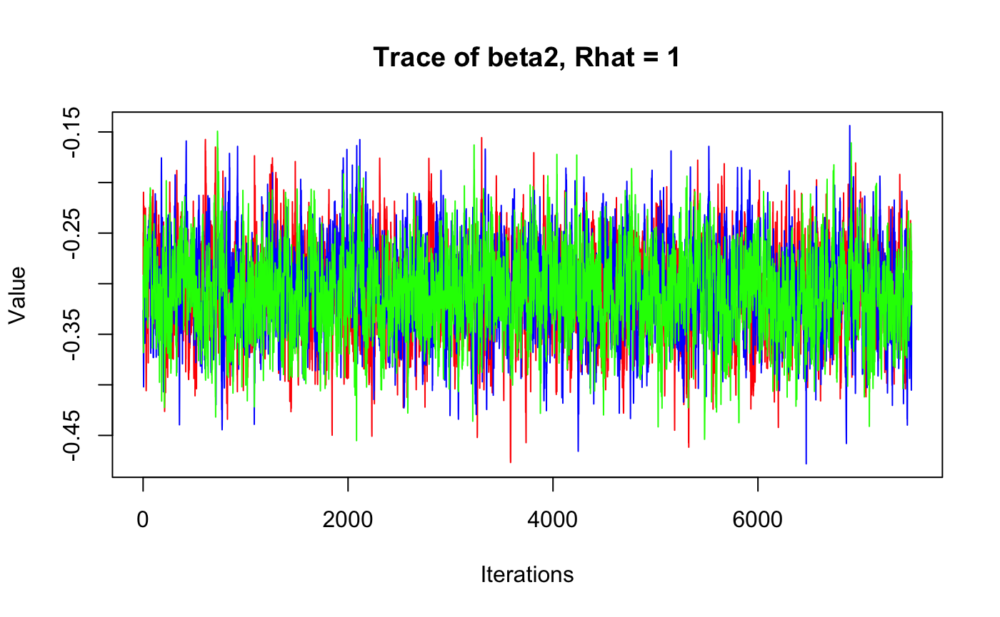
falcons <- dplyr::mutate(falcons, p = falcon_mod$mean$p,
q2.5_p = falcon_mod$q2.5$p,
q97.5_p = falcon_mod$q97.5$p)
ggplot(falcons) +
geom_ribbon(aes(x = Year, ymin = q2.5_p, ymax = q97.5_p), fill = "grey90") +
geom_path(aes(x = Year, y = p), color = "red") +
geom_point(aes(x = Year, y = R.Pairs/Pairs)) +
scale_y_continuous("Pairs")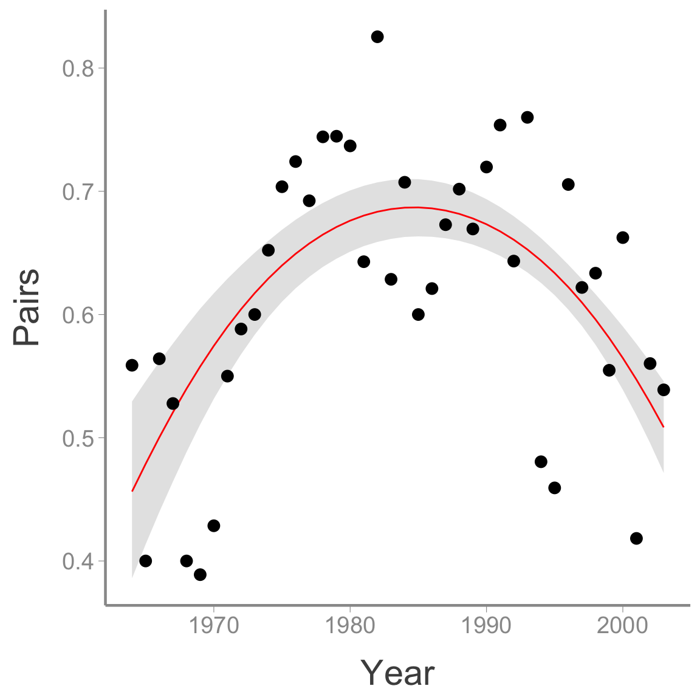